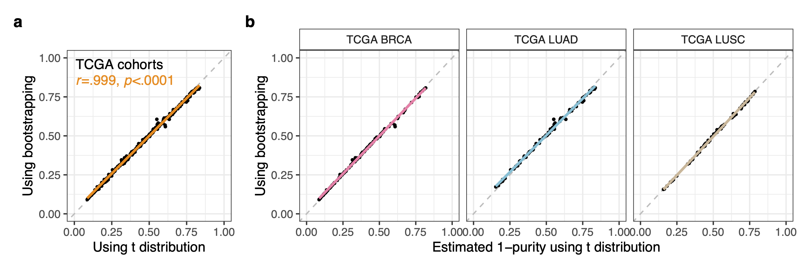

Purity Estimation
purity_estimation.RdThe purity_estimation() function estimates tumour sample purity based on DNA methylation beta values and reference linear models that reflect the correlation between tumour purity and beta values in each analysed CpG. This function can be applied to both single and multiple samples in each run and allows multi-core execution.
Usage
purity_estimation(
reference_regressions,
beta_values,
alpha = 0.7,
slope_threshold = 0.2,
variance_threshold = 0.05,
proportion_to_interval = 0.96,
cores = 1,
assume_t_distribution = TRUE,
Boots_N = 500,
extended_output = FALSE
)Arguments
- reference_regressions
List object containing the parameters of the reference regressions determined using the reference_regression_generator() function (both short and extended versions are valid). The input must at least include the list containing a named vector with the variance of the betas of CpGs used to build the regressions (input$cpg.variance), the slopes, intercepts residual standard error and degrees of freedom of the regression calculated per CpG (input$reg.slopes, input$reg.intercepts, input$reg.RSE and input$df as matrices). If the prediction intervals for each regression are intended to be calculated through bootstrapping instead of assuming t distribution the extended version of the regressions is required.
- beta_values
A matrix with CpGs as rows and analysed samples (or an individual sample) as columns with the uncorrected beta values from the CpGs of the samples whose purities are intended to be estimated. The values must be numeric, the rows must be names with the CpG ID, and the columns with the sample IDs. An example of the required format is available in the example_betas_to_correct matrix.
- alpha
Default = 0.7. The alpha value used to determine the width of the prediction intervals for each CpG and sample determined from the reference regressions. The usage of a excessively wide or narrow interval can increase the prediction error.
- slope_threshold
Default = 0.2. Minimum slope allowed per regression for them to be taken into consideration in the sample purity estimation. The inclusion of regressions below the threshold can increase the prediction error, and therefore will be considered uninformative and ignored.
- variance_threshold
Default = 0.05. CpG beta value variance cutoff to filter reference data. If the CpGs are not variable enough PureBeta cannot obtain information for the estimation. These CpGs are non-informative and can increase the execution time and the prediction error.
- proportion_to_interval
Default = 0.96. Percentage of the maximum 1 - purity coverage detected to include in the estimated the 1-Purity interval. A lower value will generate wider intervals, and a higher one narrower ranges.
- cores
Default = 1. Number of cores to be used to run the function in parallel.
- assume_t_distribution
Default = TRUE. Set this argument to FALSE if the user does not want to use the default t statistic to calculate prediction intervals from each of the reference regression. In this case the interval will be determined through bootstrapping, a non-parametric strategy that may significantly increase the execution time (The purity estimation of the example dataset provided in the package using reference regressions built from the example reference data also provided in the package is 215 times slower). The bootstrapping and t distribution based approaches have shown almost identical results in the analysed data (TCGA-BRCA, TCGA-LUAD, TCGA-LUSC and other external validation datasets) using the default parameters as shown in the image below. The bootstrapping based approach may also generate excessive RAM usage errors when parallelized on a high number of cores.

- extended_output
Default = FALSE. Set this argument to TRUE if the user wants to obtain the CpGs used (informative for the estimation) for the purity estimation of each analysed sample in the output list.
- Boost_N
The number of times the that the values will be bootstrapped to generate the prediction interval should be entered here if assume_t_distribution = FALSE. While an excessively low number will generate an unreliable output, choosing an excessively high value will significantly decrease the function's execution speed.
Value
extended_output List containing a data frame with the predicted 1 - Purity values (output$`Estimated_1mPurities`). It contains the identified estimates (in very exceptional cases it could be different to 1) the estimated 1-Purity values and intervals predicted per each sample. If more than one estimates are obtained, one independent line per estimate will be created in the data frame. A list with the CpGs used for the purity prediction of each sample after the filtering steps is also included in the output list (output$`Used_CpGs`) if the extended_output = TRUE option is selected.
Examples
# Using the default parameters
purity_estimation(reference_regressions = output_from_reference_regression_generator,
beta_values = example_betas_to_correct)
# Specifying new parameters
purity_estimation(reference_regressions = output_from_reference_regression_generator,
beta_values = example_betas_to_correct,
alpha = 0.75,
slope_threshold = 0.25,
variance_threshold = 0.06,
proportion_to_interval = 0.93,
cores = 5,
extended_output = TRUE)
# Using bootstrapping
purity_estimation(reference_regressions = output_from_reference_regression_generator,
beta_values = example_betas_to_correct,
cores = 5,
extended_output = TRUE,
assume_t_distribution = FALSE,
Boots_N = 1000)